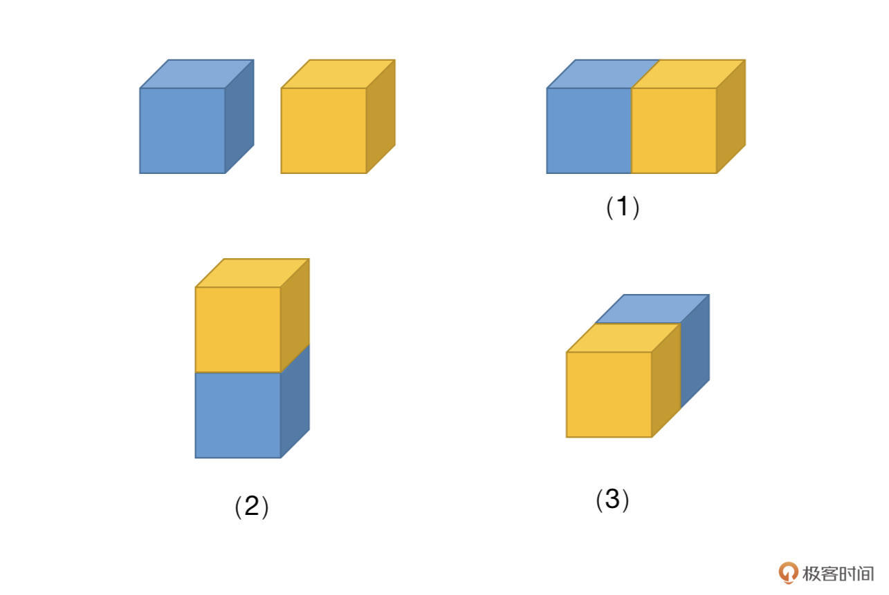
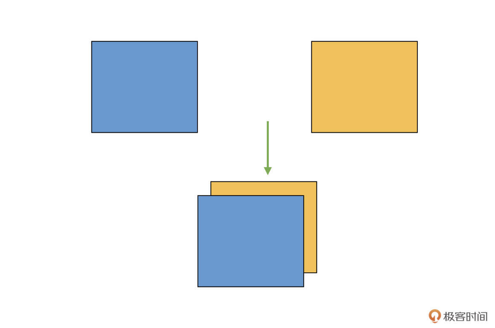
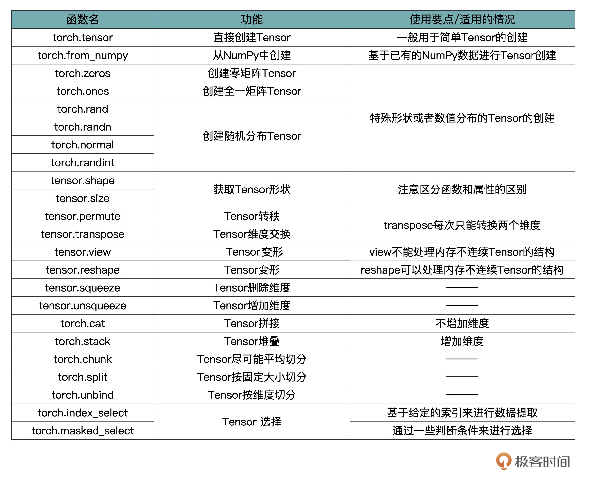

- 00 开篇词 如何高效入门PyTorch？.md.html
- 01 PyTorch：网红中的顶流明星.md.html
- 02 NumPy（上）：核心数据结构详解.md.html
- 03 NumPy（下）：深度学习中的常用操作.md.html
- 04 Tensor：PyTorch中最基础的计算单元.md.html
- 05 Tensor变形记：快速掌握Tensor切分、变形等方法.md.html
- 06 Torchvision（上）：数据读取，训练开始的第一步.md.html
- 07 Torchvision（中）：数据增强，让数据更加多样性.md.html
- 08 Torchvision（下）：其他有趣的功能.md.html
- 09 卷积（上）：如何用卷积为计算机“开天眼”？.md.html
- 10 卷积（下）：如何用卷积为计算机“开天眼”？.md.html
- 11 损失函数：如何帮助模型学会“自省”？.md.html
- 12 计算梯度：网络的前向与反向传播.md.html
- 13 优化方法：更新模型参数的方法.md.html
- 14 构建网络：一站式实现模型搭建与训练.md.html
- 15 可视化工具：如何实现训练的可视化监控？.md.html
- 16 分布式训练：如何加速你的模型训练？.md.html
- 17 图像分类（上）：图像分类原理与图像分类模型.md.html
- 18 图像分类（下）：如何构建一个图像分类模型_.md.html
- 19 图像分割（上）：详解图像分割原理与图像分割模型.md.html
- 20 图像分割（下）：如何构建一个图像分割模型？.md.html
- 21 NLP基础（上）：详解自然语言处理原理与常用算法.md.html
- 22 NLP基础（下）：详解语言模型与注意力机制.md.html
- 23 情感分析：如何使用LSTM进行情感分析？.md.html
- 24 文本分类：如何使用BERT构建文本分类模型？.md.html
- 25 摘要：如何快速实现自动文摘生成？.md.html
- 加餐 机器学习其实就那么几件事.md.html
- 用户故事 Tango：师傅领进门，修行在个人.md.html
- 答疑篇 思考题答案集锦.md.html
- 结束语 人生充满选择，选择与努力同样重要.md.html
- 捐赠
05 Tensor变形记：快速掌握Tensor切分、变形等方法
你好，我是方远。
上节课我们一起学习了Tensor的基础概念，也熟悉了创建、转换、维度变换等操作，掌握了这些基础知识，你就可以做一些简单的Tensor相关的操作了。
不过，要想在实际的应用中更灵活地用好Tensor，Tensor的连接、切分等操作也是必不可少的。今天这节课，咱们就通过一些例子和图片来一块学习下。虽然这几个操作比较有难度，但只要你耐心听我讲解，然后上手练习，还是可以拿下的。
Tensor的连接操作
在项目开发中，深度学习某一层神经元的数据可能有多个不同的来源，那么就需要将数据进行组合，这个组合的操作，我们称之为连接。
cat
连接的操作函数如下。
torch.cat(tensors, dim = 0, out = None)
cat是concatnate的意思，也就是拼接、联系的意思。该函数有两个重要的参数需要你掌握。
第一个参数是tensors，它很好理解，就是若干个我们准备进行拼接的Tensor。
第二个参数是dim，我们回忆一下Tensor的定义，Tensor的维度（秩）是有多种情况的。比如有两个3维的Tensor，可以有几种不同的拼接方式（如下图），dim参数就可以对此作出约定。

看到这里，你可能觉得上面画的图是三维的，看起来比较晦涩，所以咱们先从简单的二维的情况说起，我们先声明两个3x3的矩阵，代码如下：
>>> A=torch.ones(3,3)
>>> B=2*torch.ones(3,3)
>>> A
tensor([[1., 1., 1.],
[1., 1., 1.],
[1., 1., 1.]])
>>> B
tensor([[2., 2., 2.],
[2., 2., 2.],
[2., 2., 2.]])
我们先看看dim=0的情况，拼接的结果是怎样的：
>>> C=torch.cat((A,B),0)
>>> C
tensor([[1., 1., 1.],
[1., 1., 1.],
[1., 1., 1.],
[2., 2., 2.],
[2., 2., 2.],
[2., 2., 2.]])
你会发现，两个矩阵是按照“行”的方向拼接的。
我们接下来再看看，dim=1的情况是怎样的：
>>> D=torch.cat((A,B),1)
>>> D
tensor([[1., 1., 1., 2., 2., 2.],
[1., 1., 1., 2., 2., 2.],
[1., 1., 1., 2., 2., 2.]])
显然，两个矩阵，是按照“列”的方向拼接的。那如果Tensor是三维甚至更高维度的呢？其实道理也是一样的，dim的数值是多少，两个矩阵就会按照相应维度的方向链接两个Tensor。
看到这里你可能会问了，cat实际上是将多个Tensor在已有的维度上进行连接，那如果想增加新的维度进行连接，又该怎么做呢？这时候就需要stack函数登场了。
stack
为了让你加深理解，我们还是结合具体例子来看看。假设我们有两个二维矩阵Tensor，把它们“堆叠”放在一起，构成一个三维的Tensor，如下图：

这相当于原来的维度（秩）是2，现在变成了3，变成了一个立体的结构，增加了一个维度。你需要注意的是，这跟前面的cat不同，cat中示意图的例子，原来就是3维的，cat之后仍旧是3维的，而现在咱们是从2维变成了3维。
在实际图像算法开发中，咱们有时候需要将多个单通道Tensor（2维）合并，得到多通道的结果（3维）。而实现这种增加维度拼接的方法，我们把它叫做stack。
stack函数的定义如下：
torch.stack(inputs, dim=0)
其中，inputs表示需要拼接的Tensor，dim表示新建立维度的方向。
那stack如何使用呢？我们一块来看一个例子：
>>> A=torch.arange(0,4)
>>> A
tensor([0, 1, 2, 3])
>>> B=torch.arange(5,9)
>>> B
tensor([5, 6, 7, 8])
>>> C=torch.stack((A,B),0)
>>> C
tensor([[0, 1, 2, 3],
[5, 6, 7, 8]])
>>> D=torch.stack((A,B),1)
>>> D
tensor([[0, 5],
[1, 6],
[2, 7],
[3, 8]])
结合代码，我们可以看到，首先我们构建了两个4元素向量A和B，它们的维度是1。然后，我们在dim=0，也就是“行”的方向上新建一个维度，这样维度就成了2，也就得到了C。而对于D，我们则是在dim=1，也就是“列”的方向上新建维度。
Tensor的切分操作
学完了连接操作之后，我们再来看看连接的逆操作：切分。
切分就是连接的逆过程，有了刚才的经验，你很容易就会想到，切分的操作也应该有很多种，比如切片、切块等。没错，切分的操作主要分为三种类型：chunk、split、unbind。
乍一看有不少，其实是因为它们各有特点，适用于不同的使用情景，让我们一起看一下。
chunk
chunk的作用就是将Tensor按照声明的dim，进行尽可能平均的划分。
比如说，我们有一个32channel的特征，需要将其按照channel均匀分成4组，每组8个channel，这个切分就可以通过chunk函数来实现。具体函数如下：
torch.chunk(input, chunks, dim=0)
我们挨个来看看函数中涉及到的三个参数：
首先是input，它表示要做chunk操作的Tensor。
接着，我们看下chunks，它代表将要被划分的块的数量，而不是每组的数量。请注意，chunks必须是整型。
最后是dim，想想这个参数是什么意思呢？对，就是按照哪个维度来进行chunk。
还是跟之前一样，我们通过几个代码例子直观感受一下。我们从一个简单的一维向量开始：
>>> A=torch.tensor([1,2,3,4,5,6,7,8,9,10])
>>> B = torch.chunk(A, 2, 0)
>>> B
(tensor([1, 2, 3, 4, 5]), tensor([ 6, 7, 8, 9, 10]))
这里我们通过chunk函数，将原来10位长度的Tensor A，切分成了两个一样5位长度的向量。（注意，B是两个切分结果组成的tuple）。
那如果chunk参数不能够整除的话，结果会是怎样的呢？我们接着往下看：
>>> B = torch.chunk(A, 3, 0)
>>> B
(tensor([1, 2, 3, 4]), tensor([5, 6, 7, 8]), tensor([ 9, 10]))
我们发现，10位长度的Tensor A，切分成了三个向量，长度分别是4，4，2位。这是怎么分的呢，不应该是3，3，4这样更为平均的方式么？
想要解决问题，就得找到规律。让我们再来看一个更大一点的例子，将A改为17位长度。
>>> A=torch.tensor([1,2,3,4,5,6,7,8,9,10,11,12,13,14,15,16,17])
>>> B = torch.chunk(A, 4, 0)
>>> B
(tensor([1, 2, 3, 4, 5]), tensor([ 6, 7, 8, 9, 10]), tensor([11, 12, 13, 14, 15]), tensor([16, 17]))
17位长度的Tensor A，切分成了四个分别为5，5，5，2位长度的向量。这时候你就会发现，其实在计算每个结果元素个数的时候，chunk函数是先做除法，然后再向上取整得到每组的数量。
比如上面这个例子，17/4=4.25，向上取整就是5，那就先逐个生成若干个长度为5的向量，最后不够的就放在一块，作为最后一个向量（长度2）。
那如果chunk参数大于Tensor可以切分的长度，又要怎么办呢？我们实际操作一下，代码如下：
>>> A=torch.tensor([1,2,3])
>>> B = torch.chunk(A, 5, 0)
>>> B
(tensor([1]), tensor([2]), tensor([3]))
显然，被切分的Tensor只能分成若干个长度为1的向量。
由此可以推论出二维的情况，我们再举一个例子， 看看二维矩阵Tensor的情况 ：
>>> A=torch.ones(4,4)
>>> A
tensor([[1., 1., 1., 1.],
[1., 1., 1., 1.],
[1., 1., 1., 1.],
[1., 1., 1., 1.]])
>>> B = torch.chunk(A, 2, 0)
>>> B
(tensor([[1., 1., 1., 1.],
[1., 1., 1., 1.]]),
tensor([[1., 1., 1., 1.],
[1., 1., 1., 1.]]))
还是跟前面的cat一样，这里的dim参数，表示的是第dim维度方向上进行切分。
刚才介绍的chunk函数，是按照“切分成确定的份数”来进行切分的，那如果想按照“每份按照确定的大小”来进行切分，该怎样做呢？PyTorch也提供了相应的方法，叫做split。
split
split的函数定义如下，跟前面一样，我们还是分别看看这里涉及的参数。
torch.split(tensor, split_size_or_sections, dim=0)
首先是tensor，也就是待切分的Tensor。
然后是split_size_or_sections这个参数。当它为整数时，表示将tensor按照每块大小为这个整数的数值来切割；当这个参数为列表时，则表示将此tensor切成和列表中元素一样大小的块。
最后同样是dim，它定义了要按哪个维度切分。
同样的，我们举几个例子来看一下split的具体操作。首先是split_size_or_sections是整数的情况。
>>> A=torch.rand(4,4)
>>> A
tensor([[0.6418, 0.4171, 0.7372, 0.0733],
[0.0935, 0.2372, 0.6912, 0.8677],
[0.5263, 0.4145, 0.9292, 0.5671],
[0.2284, 0.6938, 0.0956, 0.3823]])
>>> B=torch.split(A, 2, 0)
>>> B
(tensor([[0.6418, 0.4171, 0.7372, 0.0733],
[0.0935, 0.2372, 0.6912, 0.8677]]),
tensor([[0.5263, 0.4145, 0.9292, 0.5671],
[0.2284, 0.6938, 0.0956, 0.3823]]))
在这个例子里，我们看到，原来4x4大小的Tensor A，沿着第0维度，也就是沿“行”的方向，按照每组2“行”的大小进行切分，得到了两个2x4大小的Tensor。
那么问题来了，如果split_size_or_sections不能整除对应方向的大小的话，会有怎样的结果呢？我们将代码稍作修改就好了：
>>> C=torch.split(A, 3, 0)
>>> C
(tensor([[0.6418, 0.4171, 0.7372, 0.0733],
[0.0935, 0.2372, 0.6912, 0.8677],
[0.5263, 0.4145, 0.9292, 0.5671]]),
tensor([[0.2284, 0.6938, 0.0956, 0.3823]]))
根据刚才的代码我们就能发现，原来，PyTorch会尽可能凑够每一个结果，使得其对应dim的数据大小等于split_size_or_sections。如果最后剩下的不够，那就把剩下的内容放到一块，作为最后一个结果。
接下来，我们再看一下split_size_or_sections是列表时的情况。刚才提到了，当split_size_or_sections为列表的时候，表示将此tensor切成和列表中元素大小一样的大小的块，我们来看一段对应的代码：
>>> A=torch.rand(5,4)
>>> A
tensor([[0.1005, 0.9666, 0.5322, 0.6775],
[0.4990, 0.8725, 0.5627, 0.8360],
[0.3427, 0.9351, 0.7291, 0.7306],
[0.7939, 0.3007, 0.7258, 0.9482],
[0.7249, 0.7534, 0.0027, 0.7793]])
>>> B=torch.split(A,(2,3),0)
>>> B
(tensor([[0.1005, 0.9666, 0.5322, 0.6775],
[0.4990, 0.8725, 0.5627, 0.8360]]),
tensor([[0.3427, 0.9351, 0.7291, 0.7306],
[0.7939, 0.3007, 0.7258, 0.9482],
[0.7249, 0.7534, 0.0027, 0.7793]]))
这部分代码怎么解释呢？其实也很好理解，就是将Tensor A，沿着第0维进行切分，每一个结果对应维度上的尺寸或者说大小，分别是2（行），3（行）。
unbind
通过学习前面的几个函数，咱们知道了怎么按固定大小做切分，或者按照索引index来进行选择。现在我们想象一个应用场景，如果我们现在有一个3 channel图像的Tensor，想要逐个获取每个channel的数据，该怎么做呢？
假如用chunk的话，我们需要将chunks设为3；如果用split的话，需要将split_size_or_sections设为1。
虽然它们都可以实现相同的目的，但是如果channel数量很大，逐个去取也比较折腾。这时候，就需要用到另一个函数：unbind，它的函数定义如下：
torch.unbind(input, dim=0)
其中，input表示待处理的Tensor，dim还是跟前面的函数一样，表示切片的方向。
我们结合例子来理解：
>>> A=torch.arange(0,16).view(4,4)
>>> A
tensor([[ 0, 1, 2, 3],
[ 4, 5, 6, 7],
[ 8, 9, 10, 11],
[12, 13, 14, 15]])
>>> b=torch.unbind(A, 0)
>>> b
(tensor([0, 1, 2, 3]),
tensor([4, 5, 6, 7]),
tensor([ 8, 9, 10, 11]),
tensor([12, 13, 14, 15]))
在这个例子中，我们首先创建了一个4x4的二维矩阵Tensor，随后我们从第0维，也就是“行”的方向进行切分 ，因为矩阵有4行，所以就会得到4个结果。
接下来，我们看一下：如果从第1维，也就是“列”的方向进行切分，会是怎样的结果呢：
>>> b=torch.unbind(A, 1)
>>> b
(tensor([ 0, 4, 8, 12]),
tensor([ 1, 5, 9, 13]),
tensor([ 2, 6, 10, 14]),
tensor([ 3, 7, 11, 15]))
不难发现，这里是按照“列”的方向进行拆解的。所以，unbind是一种降维切分的方式，相当于删除一个维度之后的结果。
Tensor的索引操作
你有没有发现，刚才我们讲的chunk和split操作，我们都是将数据整体进行切分，并获得全部结果。但有的时候，我们只需要其中的一部分，这要怎么做呢？一个很自然的想法就是，直接告诉Tensor我想要哪些部分，这种方法我们称为索引操作。
索引操作有很多方式，有提供好现成API的，也有用户自行定制的操作，其中最常用的两个操作就是index_select和masked_select，我们分别去看看用法。
index_select
这里就需要index_select这个函数了，其定义如下：
torch.index_select(tensor, dim, index)
这里的tensor、dim跟前面函数里的一样，不再赘述。我们重点看一看index，它表示从dim维度中的哪些位置选择数据，这里需要注意，index是torch.Tensor类型。
还是跟之前一样，我们来看几个示例代码：
>>> A=torch.arange(0,16).view(4,4)
>>> A
tensor([[ 0, 1, 2, 3],
[ 4, 5, 6, 7],
[ 8, 9, 10, 11],
[12, 13, 14, 15]])
>>> B=torch.index_select(A,0,torch.tensor([1,3]))
>>> B
tensor([[ 4, 5, 6, 7],
[12, 13, 14, 15]])
>>> C=torch.index_select(A,1,torch.tensor([0,3]))
>>> C
tensor([[ 0, 3],
[ 4, 7],
[ 8, 11],
[12, 15]])
在这个例子中，我们先创建了一个4x4大小的矩阵Tensor A。然后，我们从第0维选择第1（行）和3（行）的数据，并得到了最终的Tensor B，其大小为2x4。随后我们从Tensor A中选择第0（列）和3（列）的数据，得到了最终的Tensor C，其大小为4x2。
怎么样，是不是非常简单？
masked_select
刚才介绍的indexed_select，它是基于给定的索引来进行数据提取的。但有的时候，我们还想通过一些判断条件来进行选择，比如提取深度学习网络中某一层中数值大于0的参数。
这时候，就需要用到PyTorch提供的masked_select函数了，我们先来看它的定义：
torch.masked_select(input, mask, out=None)
这里我们只需要关心前两个参数，input和mask。
input表示待处理的Tensor。mask代表掩码张量，也就是满足条件的特征掩码。这里你需要注意的是，mask须跟input张量有相同数量的元素数目，但形状或维度不需要相同。
你是不是还感觉有些云里雾里？让我来举一个例子，你看了之后，一下子就能明白。
你在平时的练习中有没有想过，如果我们让Tensor和数字做比较，会有什么样的结果？比如后面这段代码，我们随机生成一个5位长度的Tensor A：
>>> A=torch.rand(5)
>>> A
tensor([0.3731, 0.4826, 0.3579, 0.4215, 0.2285])
>>> B=A>0.3
>>> B
tensor([ True, True, True, True, False])
在这段代码里，我们让A跟0.3做比较，得到了一个新的Tensor，内部每一个数值表示的是A中对应数值是否大于0.3。
比如第一个数值原来是0.3731，大于0.3，所以是True；最后一个数值0.2285小于0.3，所以是False。
这个新的Tensor其实就是一个掩码张量，它的每一位表示了一个判断条件是否成立的结果。
然后，我们继续写一段代码，看看基于掩码B的选择是怎样的结果 ：
>>> C=torch.masked_select(A, B)
>>> C
tensor([0.3731, 0.4826, 0.3579, 0.4215])
你会发现，C实际上得到的就是：A中“满足B里面元素值为True的”对应位置的数据。
好了，这下你应该知道了masked_select的作用了吧？其实就是我们根据要筛选的条件，得到一个掩码张量，然后用这个张量去提取Tensor中的数据。
根据这个思路，上面的例子就可以简化为：
>>> A=torch.rand(5)
>>> A
tensor([0.3731, 0.4826, 0.3579, 0.4215, 0.2285])
>>> C=torch.masked_select(A, A>0.3)
>>> C
tensor([0.3731, 0.4826, 0.3579, 0.4215])
是不是非常简单呢？
小结
恭喜你完成了这节课的学习。这节课，我们一同学习了Tensor里更加高级的操作，包括Tensor之间的连接操作，Tensor内部的切分操作，以及基于索引或者筛选条件的数据选择操作。
当然了，在使用这些函数的时候，你最需要关注的就是边界的数值大小，具体来说就是维度和大小相关的参数，一定要提前仔细计算好，要不然就会产生错误的结果。
结合众多的例子，我相信你一定可以拿下这些操作。
这里我特意给你梳理了一张表格，总结归纳了Tensor中的主要函数跟用法。不过这些参数咱们也不用死记硬背，我们在使用的时候，根据需要灵活查询相关的参数列表即可。- - 通过这两节课，我们搞懂了Tensor的一系列操作，在以后的项目中，你就可以游刃有余地对Tensor进行各种花式操作了，加油!
每课一练
现在有个Tensor，如下：
>>> A=torch.tensor([[4,5,7], [3,9,8],[2,3,4]])
>>> A
tensor([[4, 5, 7],
[3, 9, 8],
[2, 3, 4]])
我们想提取出其中第一行的第一个，第二行的第一、第二个，第三行的最后一个，该怎么做呢？
欢迎你在留言区跟我交流互动，也推荐你把这节课分享给更多同事、朋友！
© 2019 - 2023 Liangliang Lee. Powered by gin and hexo-theme-book.